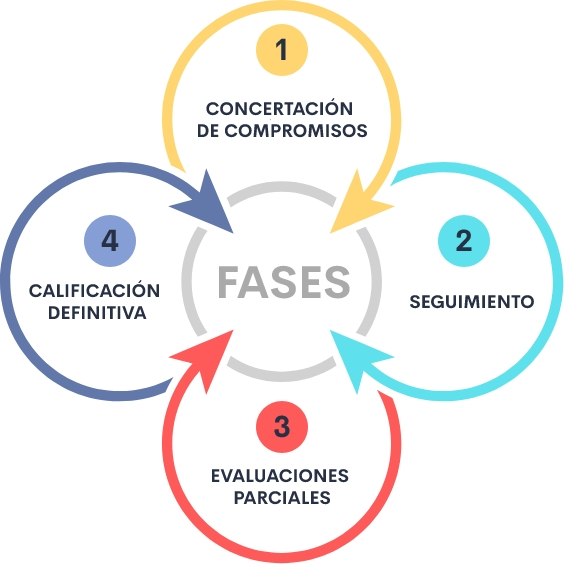

Introducción
El Acuerdo 6176 de 2018, expedido por la Comisión Nacional del Servicio Civil, -CNSC, establece cuatro fases para llevar a cabo el proceso de evaluación del desempeño de los empleados de carrera administrativa y en periodo de prueba
En la primera fase se realiza la concertación de compromisos entre el evaluado y el evaluador. La segunda fase se refiere al seguimiento que se realiza durante el periodo de evaluación, la tercera fase corresponde a las evaluaciones parciales determinando el porcentaje de avance de los compromisos del servidor público, y en la cuarta fase se consolidan los resultados obtenidos en las evaluaciones parciales para establecer la calificación definitiva.
1. Fases de la evaluación del desempeño laboral
El sistema de evaluación del desempeño laboral tipo de la Comisión Nacional del Servicio Civil (CNSC), reglamentado por el Acuerdo 6176 de 2018 y su anexo técnico, establece cuatro fases para llevar a cabo el proceso de evaluación del desempeño laboral para el periodo anual y el período de prueba de los servidores públicos de la siguiente manera:
Fase 1
1.1 Concertación de compromisos laborales
La concertación de compromisos entre el evaluado y el evaluador debe hacerse dentro de los quince (15) días hábiles siguientes del inicio del período de evaluación anual o de la posesión del servidor en período de prueba. En la concertación de compromisos se deben tener en cuenta los siguientes insumos, atendiendo al acuerdo 6176 de 2018, relacionados a continuación:
- Manual específico de funciones y competencias laborales.
- Planes institucionales o metas por áreas, dependencias, grupos internos de trabajo y procesos o indicadores de gestión.
- El resultado de la evaluación de áreas o dependencias del año inmediatamente anterior, expedida por la oficina de control interno o quien haga sus veces.
- El resultado de la última calificación definitiva del desempeño laboral.
- Los compromisos de mejoramiento individual si se realizaron en el periodo de evaluación inmediatamente anterior.
Compromisos funcionales
Los compromisos funcionales: “Son los resultados, productos o servicios susceptibles de ser medidos y verificados, que deberá cumplir el servidor en el período de evaluación respectivo, de conformidad con los plazos y condiciones establecidas en la fase de concertación”. (anexo técnico del Acuerdo 6176/18)
Anexo. Acuerdo 6176 de 2018 Comisión Nacional del Servicio Civil
En periodo anual, el número de compromisos a concertar no deberá ser superior a cinco (5) y, para el período de prueba máximo podrán ser tres (3). Estos compromisos tienen un peso porcentual del 85% de la calificación total y deben ser medibles y realizables.
En la concertación de compromisos funcionales se debe tener en cuenta la siguiente estructura:
Ejemplo compromiso funcional:
Verbo: Elaborar + Objeto: una guía de atención + condición de resultado: para mejorar la calidad de atención a las personas.
Al elaborar compromisos es importante que respondan a preguntas, relacionadas con cada uno de los elementos de la estructura del compromiso:
Verbo
¿Cuál debe ser la actividad precisa que debe realizar el evaluado que permita la entrega del producto, servicio o resultado sobre el cual va a ser valorado su desempeño?
Algunos ejemplos de VERBOS sugeridos:
- Actualizar
- Administrar
- Adquirir
- Capacitar
- Certificar
- Clasificar
- Conceptuar
- Desarrollar
- Diagnosticar
- Diseñar
- Distribuir
- Ejecutar
- Elaborar
- Entregar
- Evaluar
- Hacer
- Identificar
- Implementar
- Inventariar
- Investigar
- Organizar
- Presentar
- Presupuestar
- Programar
- Proyectar
- Publicar
- Registrar
- Sistematizar
- Verificar
Objeto
El objeto además de permitir establecer el producto, servicio o resultado que debe entregar el evaluado para cumplir con el compromiso pactado, debe responder a los siguientes interrogantes:
- ¿Qué documentos específicos permitirán identificar el cumplimiento del compromiso fijado?
- ¿La gestión para el alcance del logro al compromiso depende del evaluado?
- ¿Es coherente con el nivel de responsabilidad y competencia del evaluado dentro de la institución?
- ¿Se puntualiza en las funciones específicas del empleo que desarrolla el evaluado?
Condición de resultado (oportunidad y calidad)
La condición de resultado hace alusión a los factores de calidad y oportunidad, o a los requisitos que deben reunir los compromisos para contribuir al logro de los resultados esperados y, deben dar respuesta a las siguientes preguntas:
- ¿En el desarrollo y avance del compromiso fijado, cuándo se deberán efectuar las entregas parciales y finales correspondientes?
- ¿Cómo se debe adelantar el compromiso?
- ¿Con qué insumos, herramientas y condiciones debe contar el evaluado para viabilizar la realización de las actividades conducentes al cumplimiento de cada una?
- ¿Para la realización del compromiso por parte del evaluado, cuáles serán los parámetros de referencia, normas, procedimientos, instructivos que deberá tener en cuenta?
Compromisos comportamentales
De acuerdo a la definición encontrada en el anexo técnico del Acuerdo 6176/18 los compromisos comportamentales son las competencias comportamentales definidas por el evaluador y evaluado. En el Decreto 815 de 2018 se encuentran definidas las competencias comunes a todos los servidores públicos, independientes de la jerarquía, modalidad laboral y función que desempeñe; y las competencias que deben ser demostradas por los servidores de acuerdo al nivel jerárquico:
Ejemplo Compromiso Comportamental:
Orientación al usuario y al ciudadano (Decreto 815/18)
Conductas asociadas:
- Valora y atiende las necesidades y peticiones de los usuarios y de los ciudadanos de forma oportuna.
- Incorpora las necesidades de usuarios y ciudadanos en los proyectos institucionales, teniendo en cuenta la visión de servicio a corto, mediano y largo plazo.
Los compromisos comportamentales tienen un peso porcentual del 15% de la calificación definitiva del evaluado, y de acuerdo al nivel de desarrollo podrán definirse compromisos de mejoramiento individual. Entre tres (3) y cinco (5), será el número de compromisos comportamentales a concertar, tanto para periodo anual como para periodo de prueba, de los cuales el nominador podrá proponer la incorporación de compromisos comportamentales (máximo 2), que considere beneficios para la obtención de las metas institucionales.
Situaciones especiales en el marco de la concertación
En el artículo 3 del Acuerdo 6176 de 2018 se definen las situaciones especiales que se pueden presentar en la fase de concertación de compromisos:
Si vencido el término establecido para realizar la concertación de los compromisos no existe consenso, el evaluador procederá a fijarlos dentro de los tres (3) días hábiles siguientes. Para ello deberá dejar constancia del hecho y solicitar la firma de un testigo que desempeñe un empleo igual o superior al del evaluado.
Lo anterior se comunicará al evaluado quien podrá presentar reclamación ante la Comisión de Personal de la entidad, dentro de los dos (2) días hábiles siguientes con la manifestación expresa de los motivos de su inconformidad.

De no ser posible la concertación de los compromisos por omisión del evaluador, el evaluado dentro de los tres (3) días hábiles siguientes al vencimiento de dicho término, le remitirá una propuesta de compromisos, respecto de la cual el evaluador hará observaciones y le presentará una propuesta ajustada. De no existir consenso, el evaluador procederá a fijarlos y el evaluado podrá presentar reclamación ante la Comisión de Personal de la entidad, dentro de los dos (2) días hábiles siguientes con la manifestación expresa de los motivos de su inconformidad.
La Comisión de Personal de la entidad conocerá y decidirá en única instancia, las reclamaciones que promuevan los evaluados por inconformidad frente a los compromisos. La decisión deberá proferirse en un término máximo de diez (10) días hábiles tanto para el período anual como para el período de prueba. Si prospera la reclamación, el evaluador deberá ajustarlos, teniendo en consideración los parámetros señalados por la Comisión de Personal.(Acuerdo 6176/18)
Así mismo, en el anexo técnico del Acuerdo 6176/18 se definen de la siguiente forma, las situaciones que dan lugar al ajuste de compromisos, durante el periodo anual y periodo de prueba:
Ajuste de compromisos en periodo anual:
- Si durante el período de evaluación se producen cambios en los planes institucionales o metas por áreas, dependencias, grupos internos de trabajo y procesos o indicadores de gestión, insumo base para la concertación.
- Por separación temporal del evaluado del ejercicio de las funciones de su cargo por un término superior a treinta (30) días calendario.
- Por cambio definitivo del empleo como resultado del traslado del evaluado o reubicación de su empleo.
- Por asignación de funciones, en los términos del artículo 2.2.5.5.52 del Decreto No. 648 de 20172 o la norma que lo modifique.
- El ajuste de compromisos recaerá sobre el porcentaje faltante para cumplir el período de evaluación
Ajuste de compromisos en periodo de prueba:
- Si durante el período de prueba se producen cambios en los planes institucionales o metas por áreas, dependencias, grupos internos de trabajo y procesos o indicadores de gestión, insumo base para la concertación.
- Por interrupción del período de prueba por un lapso igual o superior a veinte (20) días continuos.
- Cuando el empleado en período de prueba sea incorporado en un empleo igual o equivalente como consecuencia de la supresión del cargo con ocasión de la reforma total o parcial de la planta de empleos de la entidad, en los términos del artículo 2.2.6.27 del Decreto 1083 de 2015.
- El ajuste de compromisos recaerá sobre el porcentaje faltante para cumplir el período de prueba.
Los compromisos funcionales y comportamentales, se deben ingresar al aplicativo EDL APP por el módulo “Compromisos y competencias”, “Concertar compromisos”, Los compromisos funcionales deben quedar asociados a las metas y a cada uno, se le asigna peso porcentual. Los compromisos comportamentales hacen referencia a las competencias a concertar con sus respectivas conductas.
Fase 2
1.2 Seguimiento
El seguimiento se refiere a la revisión del avance, cumplimiento o incumplimiento de los compromisos, durante el período de evaluación. La verificación está a cargo del evaluador, donde podrá tener en cuenta los siguientes criterios definidos en el anexo técnico del Acuerdo 6176/18:
- El avance de los planes institucionales o metas por áreas, dependencias, grupos internos de trabajo y procesos o indicadores de gestión.
- Las evidencias que sean aportadas por el evaluador, evaluado o un tercero sobre el desarrollo de los compromisos concertados.
El resultado del seguimiento, deberá ser informado por el evaluador al evaluado, señalando los avances, los aportes, aspectos a mejorar o incumplimiento de compromisos, que puede dar lugar a un compromiso de mejoramiento individual.
Los documentos que soportan esta fase, deben ser custodiados por el evaluador hasta el cierre del proceso de evaluación.
Evidencias
Son los elementos que permiten verificar el avance, cumplimiento o incumplimiento de los compromisos que se han generado durante el período de evaluación, de manera objetiva, equitativa y transparente, desde el momento de concertación de compromisos hasta los recursos de reposición y apelación para alcanzar un porcentaje superior; en caso de obtener el porcentaje mínimo satisfactorio por omisión del evaluador.
Las evidencias permiten soportar la calificación de cada evaluado y tanto los evaluados como los evaluadores deberán realizar la descripción de las mismas en el aplicativo diseñado por la CNSC. (EDL APP), en el módulo de evidencias.
Ejemplo evidencias para los compromisos concertados:
Compromiso funcional:
Elaborar guías de atención con sus respectivos protocolos para mejorar la calidad de atención a las personas.
Evidencias:
- Guía de atención
- Plan de capacitación propuesto sobre los contenidos de la guía de atención
- Instrumento de validación de la guía
Compromiso comportamental:
Orientación al usuario y al ciudadano (Decreto 815/18)
Conductas asociadas:
- Valora y atiende las necesidades y peticiones de los usuarios y de los ciudadanos de forma oportuna
- Incorpora las necesidades de usuarios y ciudadanos en los proyectos institucionales
- Teniendo en cuenta la visión de servicio a corto, mediano y largo plazo.
Evidencias:
- Encuestas de satisfacción
- Indicadores
- Buzón de sugerencias
- Listas de chequeo
(Instrumentos aplicados para medir la percepción de los usuarios en cuanto a la actitud para dirigir las decisiones y acciones en pro de la calidad del servicio).
Compromisos de mejoramiento
Los compromisos de mejoramiento corresponden al conjunto de acciones preventivas y correctivas que se suscriben con el evaluado durante el período de evaluación, para el desarrollo de los compromisos.
Con respecto a los compromisos de mejoramiento, el Acuerdo 6176 de 2018 establece: en su artículo 7:
Si durante el período de evaluación, el evaluador evidencia que existen aspectos a mejorar, podrá suscribir compromisos de mejoramiento individual basados en el seguimiento a los avances de los planes institucionales o metas por áreas, dependencias, grupos internos de trabajo y procesos o indicadores de gestión y las evidencias sobre el desarrollo de los compromisos concertados.
Por el módulo compromisos de mejoramiento del aplicativo EDL APP de la CNSC, se registran los compromisos que se generen, como resultado del seguimiento al desempeño de los compromisos o competencias del servidor, dentro del proceso de evaluación, indicando las causas, aspecto a corregir, acciones de mejoramiento y observaciones.
Fase 3
1.3 Evaluaciones parciales
En el periodo de evaluación anual se deben realizar evaluaciones parciales semestrales, y pueden presentarse situaciones administrativas que dan lugar a evaluaciones parciales eventuales en periodo anual y evaluaciones parciales en periodo de prueba. Dichas situaciones se definen en los temas: valuación parcial semestral y evaluaciones parciales eventuales en período anual.
Si, en el periodo semestral, se generan evaluaciones parciales eventuales, el periodo se debe cerrar con otra evaluación parcial eventual, por el lapso comprendido entre la última evaluación y el final del periodo, y los resultados se deben tener en cuenta en las evaluaciones parciales semestrales.
Según lo establecido en el anexo técnico del Acuerdo 6176 de 2018, los compromisos funcionales se evalúan según su cumplimento en un rango de 1 a 100, independiente del peso porcentual asignado a cada compromiso, y los compromisos comportamentales se evalúan de acuerdo al nivel de desarrollo, según escala establecida por la CNSC.
Las conductas asociadas a las competencias a evaluar, serán calificadas considerando tres variables
Frecuencia
Impacto
Valor
Con respecto a la frecuencia en el ejercicio del empleo, las conductas serán calificadas de acuerdo a los siguientes niveles:
Frecuencia: por conducta asociada
Descripción
Nunca
Algunas veces
Frecuentemente
Siempre
Para las variables impacto y valor, La CNSC ha establecido la descripción para dar respuesta a dos interrogantes de acuerdo a una escala de valoración. La primera pregunta está relacionada con el aporte de las conductas para el cumplimiento de los compromisos, y la segunda, si las conductas permiten aporte adicional por parte del servidor, con respecto a los compromisos acordados.
Impacto: por competencia
Para la pregunta relacionada con: el aporte a las conductas para el cumplimiento de los compromisos
Descripción
si
Algunas veces
Moderadamente
No
valor: por competencia
Para la segunda pregunta relacionada con: si las conductas permiten aporte adicional a los compromisos concertados
Descripción
Si
No
Las evaluaciones se realizan utilizando como instrumento el aplicativo EDL APP diseñado por la CNSC, por el módulo evaluar, donde el evaluador podrá realizar las evaluaciones de todos los funcionarios que se encuentran a su cargo, seleccionando el periodo, el evaluado y el tipo de evaluación según corresponda, para llevar a cabo la calificación de los compromisos funcionales y comportamentales que se concertaron con el evaluado.
Evaluación parcial semestral
En las evaluaciones parciales semestrales en período anual, se verifica las evidencias aportadas por el evaluado, los resultados del seguimiento efectuado, y el avance de los planes institucionales o metas por áreas, dependencias, grupos internos de trabajo y procesos o indicadores de gestión, para evidenciar el porcentaje de avance, en el cumplimiento de los compromisos concertados para el período de evaluación. (Acuerdo 6176 de 2018).
La evaluación parcial del primer semestre
Se debe realizar dentro de 15 días hábiles siguientes al vencimiento del periodo, comprendido entre el 1 de febrero y el 31 de julio de cada año.
La evaluación parcial del segundo semestre
Comprendido entre el 1 de agosto y el 31 de enero del año siguiente, se debe realizar dentro de 15 días hábiles siguientes al vencimiento del periodo.
Evaluaciones parciales eventuales en periodo anual
Las evaluaciones parciales eventuales en periodo anual corresponden a un porcentaje proporcional por el tiempo laborado por el evaluado, y se pueden dar por las siguientes situaciones definidas en el artículo 5 del Acuerdo 6176 de 2018:

Por cambio de evaluador, quien deberá evaluar a sus colaboradores antes de retirarse del empleo.
Por cambio definitivo del empleo como resultado de traslado del evaluado o reubicación del empleo.
Cuando el empleado deba separarse temporalmente del ejercicio de las funciones del cargo por suspensión o por asumir por encargo las funciones de otro cargo o con ocasión de licencias, comisiones o de vacaciones, en caso de que el término de duración de estas situaciones sea superior a treinta (30) días calendario.
La que corresponda al lapso comprendido entre la última evaluación, si la hubiere, y el final del período semestral a evaluar.
Por separación temporal del empleado público con ocasión de un nombramiento en período de prueba, la cual surtirá efectos sólo en los eventos en que el servidor regrese a su empleo o no supere el período de prueba.
Las evaluaciones parciales eventuales deben producirse dentro de los diez (10) días hábiles siguientes, contados a partir del momento en que se presente la situación que las origina, con excepción de la ocasionada por cambio de evaluador, la cual se realizará antes del retiro de este.
Evaluaciones parciales en periodo de prueba
En el artículo 6 del Acuerdo 6176 de 2018, se definen las siguientes situaciones especiales, que dan lugar a la realización de evaluaciones parciales eventuales en periodo de prueba:
Por cambio evaluador, quien deberá evaluar al empleado público en período de prueba antes de retirarse del empleo.
Por interrupción del período de prueba por un lapso igual o superior a 20 días continuos, caso en el cual el período de prueba se prolongará por el término que dure la interrupción.
La que corresponda al lapso comprendido entre la última evaluación parcial si la hubiere y el final del período de prueba.
Fase 4
1.4 Calificación definitiva
En la calificación definitiva se consolidan los resultados de las evaluaciones parciales, para obtener el nivel de calificación: sobresaliente, satisfactorio o no satisfactorio. La calificación debe llevarse a cabo dentro de los 15 días hábiles siguientes al vencimiento del periodo de evaluación, comprendido entre el 1 de febrero y el 31 de enero del año siguiente.
La calificación definitiva, se realiza utilizando como instrumento el aplicativo EDL APP de la CNSC, por el módulo “Evaluar”.
Calificación definitiva en período anual
Antes de generar la calificación definitiva en periodo anual, se debe realizar la evaluación del segundo semestre, teniendo presente que si se realizaron evaluaciones parciales eventuales; el periodo semestral se debe cerrar con otra evaluación parcial eventual.
En la consolidación de la calificación definitiva en período anual, se debe tener en cuenta los siguientes criterios:
La calificación corresponde a la sumatoria de los porcentajes que obtiene el evaluado en las evaluaciones parciales semestrales, y en las evaluaciones parciales eventuales, en el caso de haberse presentado situaciones administrativas que dieron lugar a ello.
Corresponde a uno de los niveles de cumplimiento de compromisos concertados, conforme a la escala de calificación definida en el artículo 10 del Acuerdo 6176 de 2018.
Finalizada la evaluación del segundo semestre se procede a generar la calificación definitiva donde se realiza la ponderación de las evaluaciones realizadas que permite registrar la calificación definitiva, con la fecha de notificación ingresada por el Evaluador de acuerdo a los términos establecidos en el artículo 34 del Decreto Ley 760 de 2005
Calificación definitiva en periodo de prueba
Una vez el empleado público finalice el periodo de prueba, el evaluador dentro de los 15 días hábiles siguientes, debe realizar la calificación definitiva y, en la consolidación debe tener en cuenta los siguientes criterios:
La calificación corresponde a la sumatoria de los porcentajes que obtiene el evaluado en las evaluaciones parciales eventuales cuando se hubieren presentado.
Corresponde a uno de los niveles de cumplimiento de compromisos concertados, conforme a la escala de calificación definida en el artículo 10 del Acuerdo 6176 de 2018.
La calificación definitiva es independiente de las evaluaciones obtenidas con anterioridad o posterioridad a esta.
El período anual de evaluación inicia al día siguiente de la firmeza de la calificación del período de prueba hasta el 31 de enero del año siguiente, siempre y cuando el lapso de prestación de servicios sea superior a treinta (30) días calendario.
En el período de prueba no procede evaluación extraordinaria.
Calificación extraordinaria
Con respecto a la calificación extraordinaria, el artículo 11 del Acuerdo 6176 de 2018, establece:
Durante el período anual, si el jefe de la entidad recibe información debidamente soportada sobre el desempeño deficiente de un empleado de carrera, podrá ordenar por escrito a su evaluador que lo califique de forma inmediata.
Esta calificación sólo podrá ordenarse después de transcurridos tres (3) meses desde la última calificación definitiva y comprenderá todo el período no evaluado hasta el momento de la orden, para lo cual se tendrán en cuenta las evaluaciones parciales que se hayan efectuado. Esta calificación corresponderá a uno de los niveles establecidos en el presente acuerdo.
Comunicaciones y notificaciones
Lo relacionado con Comunicaciones y Notificaciones fueron definidas en el material de formación 1, según el artículo 16 del Acuerdo 617 de 2018: “Las comunicaciones y notificaciones se llevarán a cabo en los términos de los artículos 33 y 34 del Decreto Ley 760 de 2005, o las disposiciones que lo modifiquen, aclaren o sustituyan”.
Recursos contra la calificación definitiva
En el material de formación 1, se definieron los recursos contra la calificación definitiva, establecidos en los artículos 35, 36 y 37 del Decreto Ley 760 de 2005. El trámite y decisión de los recursos, se aplicará conforme a lo dispuesto en el Código de Procedimiento Administrativo y de lo Contencioso Administrativo.
Glosario
Calificación:la calificación corresponde a la asignación del porcentaje alcanzado por el evaluado, conforme a las evidencias que dan cuenta de su desempeño y comportamiento.
Calificación del periodo de prueba:es aquella que resulta de evaluar el desempeño laboral del empleado vinculado mediante un proceso de selección, al cumplir el término de duración del período de prueba, el cual se cuenta a partir de la inducción en el puesto de trabajo.
Carrera administrativa:sistema que regula el ingreso, permanencia, ascenso y retiro del personal, regulado por la función pública y la Comisión Nacional del Servicio Civil.
Comisión Nacional del Servicio Civil – CNSC:es un órgano autónomo e independiente, del más alto nivel en la estructura del Estado colombiano, con personería jurídica, autonomía administrativa, patrimonial y técnica, y no hace parte de ninguna de las ramas del poder público. Según el artículo 130 de la Constitución Política, es "responsable de la administración y vigilancia de las carreras de los servidores públicos, excepción hecha de las que tengan carácter especial".
Competencias:es la capacidad de una persona para desempeñar, en diferentes contextos y con base en los requerimientos de calidad y resultados esperados en el sector público, las funciones inherentes a un empleo; capacidad que está determinada por los conocimientos, destrezas, habilidades, valores, actitudes y aptitudes que debe poseer y demostrar el empleado. (ESAP-DAFP – Guía para la formulación del PIC).
Compromisos laborales:son aquellos que evidencian las competencias funcionales del empleo y las competencias comportamentales que debe acreditar todo servidor público en el ejercicio del empleo.
Desempeño:conductas laborales del empleado en el cumplimiento de sus funciones. El desempeño se considera también como el desarrollo de los compromisos en relación a las metas deseadas por la entidad.
Empleo público:es el conjunto de funciones, tareas y responsabilidades que se asignan a una persona y las competencias requeridas para llevarlas a cabo, con el propósito de satisfacer el cumplimiento de los planes de desarrollo y los fines del estado. (artículo 19 Ley 909 de 2004).
Evaluación:la evaluación consiste en estimar de forma permanente los conocimientos, destrezas, actitudes, habilidades, aptitudes y rendimiento de los evaluados durante el período respectivo.
Evaluación no satisfactoria:es aquella que no alcanza el mínimo establecido como satisfactorio dentro de la escala vigente. Una vez en firme conlleva a la declaración de insubsistencia del nombramiento del empleado.
Evaluado:empleado de carrera o en período de prueba que presta sus servicios en una entidad cuyo sistema de carrera administrativa se encuentre administrado y vigilado por la CNSC.
Evaluador:es el jefe inmediato del servidor de carrera o en período de prueba, responsable de evaluar su desempeño, quien deberá ostentar un grado igual o superior al evaluado.
Evidencias:son los elementos que permiten establecer de manera objetiva equitativa y transparente el avance, cumplimiento o, incumplimiento de los compromisos que se han generado durante el período de evaluación.
Función pública:aquella que está al servicio de los intereses generales y prestación de servicios a cargo del Estado, a través de sus servidores, y se desarrolla con fundamento en los principios de igualdad, moralidad, eficacia, economía, celeridad, imparcialidad y publicidad (artículo 209 Constitución Política y 2° Ley 909 de 2004).
Impedimentos: corresponden a causales de orden legal que imposibilitan el desempeño de una función; buscan garantizar el principio de la imparcialidad y el debido proceso. Para el caso de la evaluación del desempeño laboral, los responsables de evaluar deberán declararse impedidos cuando se encuentren vinculados con estos por matrimonio o por unión permanente o tengan parentesco hasta el cuarto grado de consanguinidad, segundo de afinidad, primero civil o exista enemistad grave con el empleado a evaluar o cuando exista cualquier causal de impedimento o hecho que afecte su objetividad.
Metas institucionales:para los fines de la evaluación del desempeño, las metas institucionales son las establecidas por la alta dirección de la entidad, de conformidad con los planes, programas, proyectos o planes operativos anuales por área o dependencia, encaminada al cumplimiento de los objetivos y propósitos de la entidad.
Periodo de prueba en empleo de carrera:el empleado con derechos de carrera administrativa que supere un concurso para un empleo de carrera será nombrado en período de prueba y su empleo se declarará vacante temporal mientras dura el período de prueba.
Recursos:mecanismos establecidos por la ley para lograr la revisión de una decisión y su eventual modificación cuando se considere que se produjo con violación de las normas legales o reglamentarias que la regulan; para el caso de la evaluación del desempeño solo proceden frente a la calificación definitiva expresa o presunta, cuando el evaluado no está de acuerdo con esta, podrá interponerlos personalmente ante el evaluador por escrito y sustentados en la diligencia de notificación personal o dentro de los cinco (5) días siguientes a la notificación de la evaluación. Los recursos que pueden interponerse son: el de reposición, ante el evaluador o ante la comisión evaluadora en los casos en que actúe esta y el de apelación, ante el superior jerárquico del evaluador. En todo caso, en el trámite y decisión de los recursos, se aplicará lo dispuesto en el Código de Procedimiento Administrativo y de lo Contencioso Administrativo.
Recusación:se presenta cuando el empleado al ser evaluado advierta una causal de impedimento de las ya mencionadas, por lo que inmediatamente lo manifestará por escrito al jefe de la entidad, quien, mediante acto administrativo motivado, decidirá sobre el impedimento dentro de los cinco días siguientes. De aceptarla, se designará otro evaluador y en el mismo acto se ordenará la entrega de los documentos que hasta la fecha obren sobre el desempeño laboral del empleado a evaluar.
Terceros:son aquellos que aporten información verificable que sirva como evidencia del desempeño laboral y comportamiento del evaluado.
Material complementario
| Nombre del documento o material. | Tipo de material. | Enlace del Recurso. |
|---|---|---|
| Acuerdo 617 de 2018 Por el cual se establece el Sistema Tipo de Evaluación del Desempeño Laboral de los Empleados Públicos de Carrera Administrativa y en Período de Prueba. Bogotá, D.C., 10 de octubre de 2018. | Acuerdo | Ver documento |
| Anexo Técnico del Sistema Tipo de Evaluación del Desempeño. Bogotá, D.C., 10 de octubre de 2018 | Anexo del Acuerdo 6176/18 | Ver documento |
Referencias bibliográficas
Acuerdo 6176 de 2018 Por el cual se establece el sistema tipo de evaluación del desempeño laboral de los empleados públicos de carrera administrativa y en período de prueba. Bogotá, D.C., 10 de octubre de 2018.https://www.funcionpublica.gov.co/eva/gestornormativo/norma.php?i=90685
Anexo técnico del sistema tipo de evaluación del desempeño. Bogotá, D.C., 10 de octubre de 2018.https://www.funcionpublica.gov.co/eva/gestornormativo/norma.php?i=90685
Constitución Política de Colombia. (1991). (Capítulo 2: De la Función pública Art. 122, 123, 125,130) República de Colombia.
Decreto 1227 de 2005 Por el cual se reglamenta parcialmente la Ley 909 de 2004 y el Decreto Ley 1567 de 1998. Capitulo IV. (2005, 25 de abril). Bogotá, D.C., 21 de abril de 2005.https://www.funcionpublica.gov.co/eva/gestornormativo/norma.php?i=16313
Decreto Ley 760 de 2005 Por el cual se establece el procedimiento que debe surtirse ante y por la Comisión Nacional del Servicio Civil para el cumplimiento de sus funciones. (Título VII Procedimiento para la notificación de la calificación de los empleados de carrera (Art.33 al 40). Bogotá, D. C., 17 de marzo de 2005.https://www.funcionpublica.gov.co/eva/gestornormativo/norma.php?i=16124
Decreto 1083 de 2015 Por medio del cual se expide el Decreto Único Reglamentario del Sector de Función Pública. (Titulo 8 Evaluación del Desempeño y calificación de servicios. Capítulo 1: Evaluación del desempeño laboral Capitulo 2: Evaluación y calificación del período de prueba). Bogotá, D.C., 26 de mayo de 2015.https://www.funcionpublica.gov.co/eva/gestornormativo/norma.php?i=62866
Decreto 815 de 2018 Por el cual se modifica el Decreto 1 083 de 2015, Único Reglamentario del Sector de Función Pública, en lo relacionado con las competencias laborales generales para los empleos públicos de los distintos niveles jerárquicos. Bogotá, D.C 8 de mayo de 2018.https://www.funcionpublica.gov.co/eva/gestornormativo/norma.php?i=86304
Ley 909 de 2004 Por la cual se expiden normas que regulan el empleo público, la carrera administrativa, gerencia pública y se dictan otras disposiciones. Bogotá, D. C., 23 de septiembre de 2004.http://www.secretariasenado.gov.co/senado/basedoc/ley_0909_2004.html